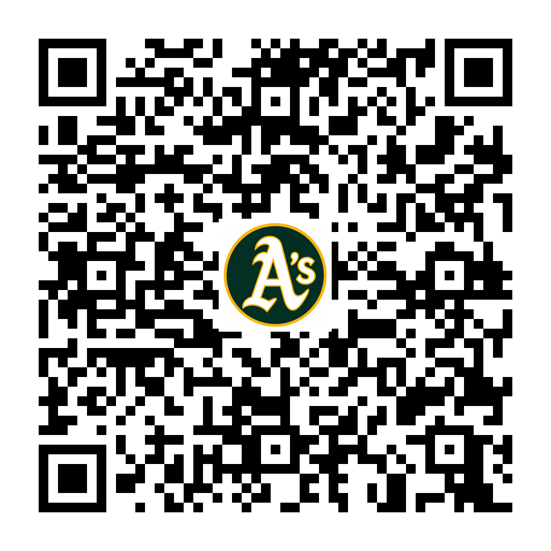

HC
Drew Friedrich
Head CoachCollege, high school and youth coaching experience with a development-first approach built around effort, teamwork and competing the right way.
Compete hard. Learn the game. Love being part of a team.
Practices, games, times and field assignments in one place. Game times and fields are listed as TBD until assigned by the league.
Game schedules, scoring, live game status and team updates all live in GameChanger. Use the button or scan the code to open the team page.
Open Team on GameChanger
SCAN TO FOLLOW GameChanger Team PageSouthern Chesapeake A's | Fall 2026
Three coaches committed to teaching the game, developing players and creating a competitive team environment.
College, high school and youth coaching experience with a development-first approach built around effort, teamwork and competing the right way.
Supporting player development, defensive work, pitching and game preparation throughout the fall season.
Supporting player development, practice stations, game preparation and helping every player maximize his field time.
We expect to compete. But fall baseball is bigger than a win-loss record. Our goal is to help the boys improve their skills, learn to love competing together and leave the season loving baseball more than when they started.